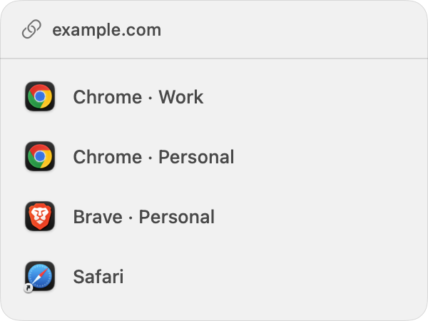

A LITTLE UTILITY FOR YOUR MAC
One link.
Your choice.
Work in Chrome. Personal in Brave. Something else in Safari. Hover over a link and choose where it opens.
Download for MacmacOS 14+ · Apple silicon & Intel · Free forever
Get the latest version on GitHub.

Your existing profiles, in one small picker.
Drag. Drop. Done.
Open the DMG, drag PickBrowser onto Applications, eject the image, and launch the installed copy. Then enable Accessibility.
Pause on a link.
The picker appears after half a second. Make it faster or slower in Settings. Move away and it disappears.
Straight to your profile.
Click a destination. No nested menus. Ordinary clicks still work as before. Your default browser stays yours.
Small by design.
No accounts. No telemetry. No saved links. Optional update checks are off by default, and you choose when to install.
Honest about its limits.
Chrome, Edge, and Brave profiles; Safari as a browser. Link detection depends on each app’s Accessibility support. If a destination isn’t exposed, PickBrowser stays quiet. macOS only for now.
Compatibility & testing notes ↗Early release: not yet Apple-notarized. macOS may block the download. Don’t disable security protections; build from source if needed.